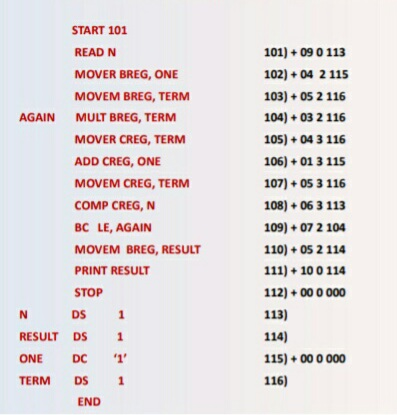

Experiment-3
Aim: Implementation of the Pass-I of the assembler to generate SYMTAB from assembly language program.
Theory:
Tasks performed by the Pass-I are:-
- Separate the symbol table, mnemonic table, and operand fields.
- Build the symbol table.
- Perform LC Processing.
- Construct Intermediate Representation (IR).
Pass-I performs the analysis of the Source Program and synthesize the IR.
Pass-I uses the following data structures:-
- OPTAB= A table of mnemonic opcodes and related information.
- SYMTAB= Table of Symbols used in the program.
- LITTAB= A table of Literals used in the program.
- POOLTAB= Table containing the information about the LITTAB.
SYMTAB:
- An entry in the SYMTAB contains the fields symbol, address & length.
- While processing an assembly statement if the symbol is found, the symbol & address contained in location counter LC is copied in to a new entry of SYMTAB.
- In the start of the assembly program an address is specified, this address is assigned to LC to keep track of each and every instruction.

Symbol table :-
| Symbol |
Address |
Length |
| LOOP |
202 |
1 |
| NEXT |
214 |
1 |
| LAST |
216 |
1 |
| A |
217 |
1 |
| BACK |
202 |
1 |
| B |
218 |
1 |